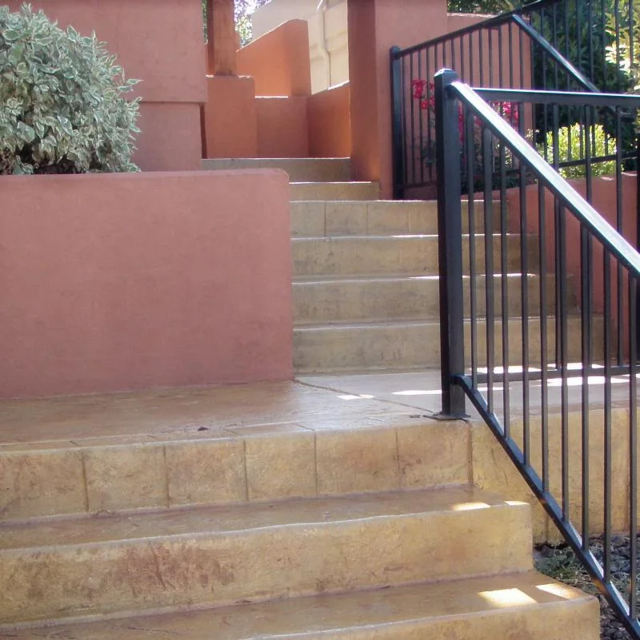
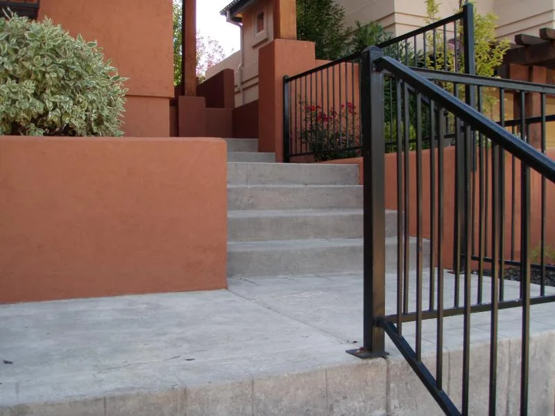

The existing surface
Condition and use shape the right approach.
↗A study in texture, finish, and the details underfoot.
Explore the finishes ↗

Surface restoration · Images from the business websiteExplore a finish that adds character to an existing concrete surface.